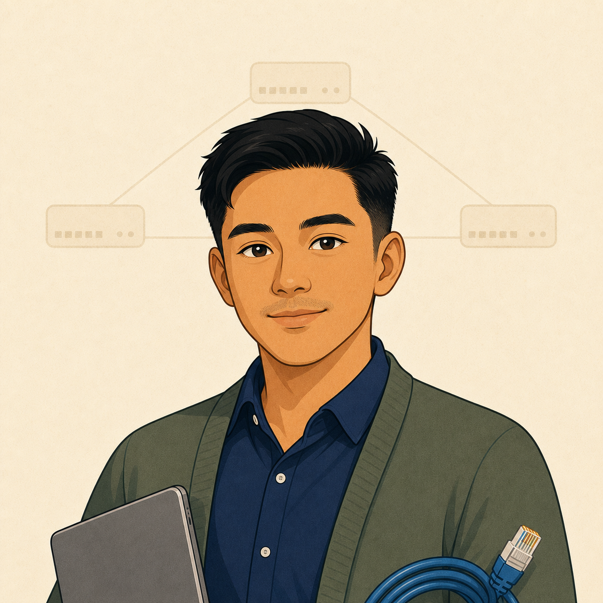

Competent and trusted. No longer learning fundamentals — learning how senior engineers think. One day, the engineer Junior looks up to.
Who you are at LoFinance
You joined six months ago from an MSP background. You already know subnetting, basic NAT, what a firewall is — you're here to learn how the enterprise reasons about failure, trade-offs, and design at scale. Penny trusts your ETAs. Cipher trusts your caution. Señor trusts you to try before asking.
Role in the story
You are the reader's avatar — the character whose curiosity drives every scene. When Junior guesses wrong, you're the one who quietly runs the verification command. When Señor asks a Socratic question, it's you he's asking. Your growth arc is the exam itself.
Signature moves
- Reaches for
getanddiagnosebefore reaching for the GUI. - Sanity-checks Junior's changes before they hit production.
- Writes the change record Penny will actually read.
What Claude teaches through you
Senior-level reasoning, design trade-offs, and failure modes. Never fundamentals — the script assumes you know them. When you get something wrong, it's a scenario-level mistake, not a syntax one.
Signature lines
"Before we change it — what does it look like right now?"
"Junior, hold on. Let me see the output first."